A spoiler-light interactive guide
Warframe: The Ultimate Beginner's Guide ウォーフレームは初めてですか？まずはここから。 الدليل الشامل للمبتدئين في وورفريم Warframe: Nihai Başlangıç Rehberi Warframe: 최고의 초보자 가이드
Warframe is a free-to-play, third-person looter-shooter where you are a Tenno — a space ninja in a bio-mechanical suit. It is famously deep and famously confusing. This guide walks you through the systems in the order you meet them, with interactive widgets and real game imagery to play with.
- Free to play
- 4-player co-op
- PvE looter-shooter
- 2013 — still updated
What is Warframe, really?
The core loop
You pick a mission from the Star Chart, drop in with up to three other players, complete an objective, and extract. Between missions you spend what you earned to get stronger. Then you do it again, on harder planets.
The magic is that your gear is the progression. Almost every weapon and Warframe is craftable for free — you farm blueprints and materials, build them in the Foundry, and level them up.
The loop, visually
Select a step above to learn what happens at each stage.
🧑🚀 You are the Operator
The Warframes are remote-controlled bio-metal suits. The child who controls them is the Operator (from the ship Zariman 10-0). This is revealed through the story quests — keep going.
🪐 Origin System
You fight across the solar system in ships called Landing Crafts. Your home base between missions is the Orbiter, where the Arsenal, Foundry, Mods and Market live.
🤝 Factions
The main enemy factions are the Grineer, Corpus, Infested, Corrupted and Sentient. Each is weak to different damage — meet them all below.
The five factions you'll fight
Pick your first Warframe
At the start you choose one of three. Each plays very differently — but none of them is a trap. You can craft the others later. Click a card to compare.
Moving, shooting, slicing
Your loadout
Every Warframe carries three weapons plus a Companion. Learn them below.
You are fast on purpose. Use Bullet Jump (jump + crouch mid-air), slides, and aim-glide to fly around the map. Mobility isn't a gimmick — it's your main defense against getting surrounded.
Controls to internalize
- Space Jump / double-jump
- Ctrl + Space Bullet jump (crouch then jump)
- Shift Sprint / slide while moving
- E Melee attack (hold to combo)
- F Interact / pick up / revive
- 1234 Warframe abilities
- R Reload
- M Open the map
Bindings shown are the default PC layout.
Your loadout, slot by slot
Click a slot to see what it does and how it is modded.
Later: your Companion
Beyond your three weapons you bring a Companion — a moddable ally that fights alongside you and can carry utility like the Vacuum pickup magnet. They level up too, with their own mod loadouts. Here are the kinds you'll meet.
| Photo | Companion | Kind | What it is good for |
|---|
The elemental combo builder
Weapons deal physical damage (Impact, Puncture, Slash) plus whatever elemental mods you install. Two primary elements combine into one secondary element. Mix the four primaries below to see the result.
Primary elements
Click two different primaries. Click a selected one to remove it.
Status effect
Pick two elements to reveal the combined damage type and what its proc does.
How enemy defenses stack
Damage has to chew through layers before it touches health. Click a layer to see what strips it — this is where element choice really pays off.
Physical damage types
Damage cheat-sheet: what to bring per faction
Enemies are not all the same. Matching an element to a faction's defenses is the single biggest damage upgrade you can make. Tap through the icons below.
Eximus units: the elite threat
Eximus are glowing elite variants of normal enemies with an extra Overguard bar. While it holds they ignore crowd control, and each type brings its own attack or aura — barriers, leech zones, shockwaves and more. Break the Overguard first, then deal with the ability.
Damage calculator (simplified)
See how a few core mods multiply your damage. This ignores armor, status, enemy level and headshots — but it shows why base damage and multishot matter so much.
All status effects at a glance
A “proc” is a random status effect triggered on hit, based on the damage types present. Values are from the current Damage system and can change with updates.
| Type | Status | What it does (on enemies) |
|---|
Mods are the real progression
A max-rank weapon with bad mods is weak. A starter weapon with great mods can clear the whole Star Chart. Learn mods and everything clicks.
How mods work
- Mod capacity = your gear's rank (max 30) plus any Aura/Stance bonus.
- Each mod has a drain cost and a polarity (a symbol).
- Matching a mod's polarity to a slot's polarity halves its drain.
- Install an Orokin Catalyst (weapons) or Orokin Reactor (Warframes) to double capacity.
- Use Forma to change a slot's polarity, then re-level the item to 30.
- Rank up mods with Endo + Credits (this is called Fusion).
Capacity calculator
Estimate how many mods you can fit.
Capacity: 30
Base capacity = rank. With a Catalyst/Reactor it doubles. Auras/Stances add capacity (typ. +7 to +18) and are themselves free.
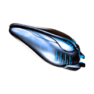
weapons ×2
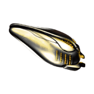
frames ×2
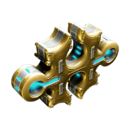
change polarity
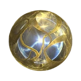
rank mods
Polarities: how mods get cheaper
Crit, status or hybrid?
Weapons are pushed in one of three directions by their mods. Pick a build to see which stats matter and which mods feed them.
Stats shown are illustrative. Real values depend on the individual weapon — check its Arsenal screen.
Ranking mods (Fusion)
Ranking a mod with Endo + Credits strengthens its effect but also raises its drain. Drag to watch Serration scale from rank 0 to rank 10.
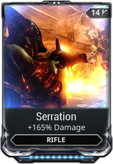
Example mod cards
Other things you'll collect
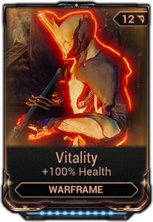
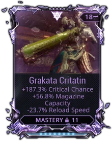
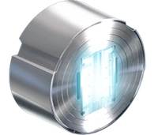
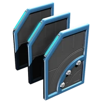
Where you actually go
The Star Chart is a map of the solar system. Missions are “nodes”. Complete nodes to unlock neighbours, beat a Junction to reach the next planet. Click a planet to meet every enemy deployed there — with pictures — and its boss.
Select a planet
Pick one on the left to see its role in your progression.
Mission types you'll meet first
How endless missions pay out
Defense, Survival, Excavation, Interception and Disruption reward you in repeating A → A → B → C rotations. Each tier is better than the last — then it loops. Click a payout below.
Where to farm key resources
Resources are planet-specific. Search a resource or a planet to find a farm spot. Drop tables change with updates, so treat this as a starting point.
Cracking Void Relics
Prime Warframes and weapons are the fancier versions of regular gear. You get their parts by opening Void Relics in Void Fissure missions — or by trading with players.
How it works
- Get a Void Relic (as a mission reward, especially endless missions).
- Optionally refine it with Void Traces to raise rare-drop odds.
- Queue for a Void Fissure mission matching that relic's era.
- Collect Reactor corruption and crack the relic by killing enemies.
- At extraction everyone picks one reward from the squad's cracked relics.
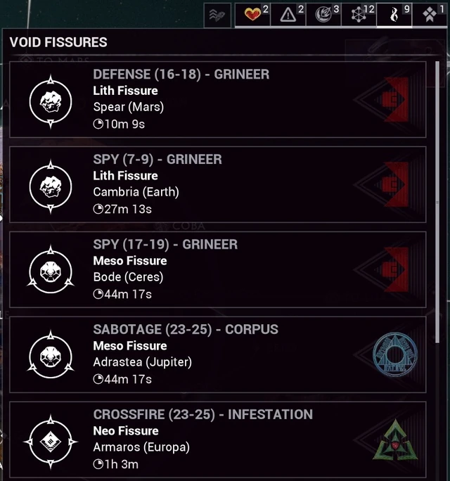
The four relic eras are Lith → Meso → Neo → Axi (plus special Requiem relics).
Refinement odds explorer
Each relic holds 6 possible rewards: 3 common, 2 uncommon, 1 rare. Odds shown are per reward slot.
Mastery Rank & your to-do list
Mastery Rank (MR) measures how much gear you've levelled. Higher MR unlocks weapons, quests and conveniences. You gain mastery for the first time you rank up a Warframe/weapon to 30, and for clearing nodes and Junctions.
Beginner checklist
Tick items off — your progress is saved in this browser.
0 / 0 complete
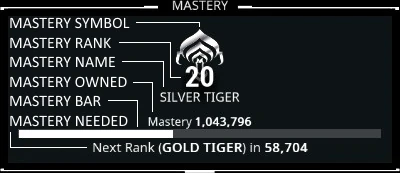
How to gain Mastery fast
- Level everything to 30 — even weapons you don't like. Mastery is per-item, once.
- Clear every node you can; first-clears give Mastery.
- Beat Junctions — 1,000 Mastery each plus they unlock the map.
- Build cheap weapons from the Market blueprints (many cost only Credits).
- Variants count separately: a Braton, MK1-Braton, Braton Prime each give their own Mastery.
Your beginner roadmap
A spoiler-light path through the early game. You do not need to rush — but this is the order things unlock.
Don't get stuck: slots & Platinum
The thing that quietly stops new players is inventory slots. You only start with a few, and every Warframe and weapon you want to keep needs one. Build gear you have no slot for and you'll be forced to choose what to sell.
Extra slots are bought with Platinum, the premium currency. You never have to pay real money: you can trade Prime parts, mods and Rivens to other players for Platinum, and Nightwave plus events hand out Catalysts, Reactors and sometimes slots for free.
How Affinity (XP) is shared
Affinity is the XP that ranks your gear. Where it goes depends on how the kill happened — and squad kills only count if allies are within Affinity Range (about 50 m).
Tip: bringing fewer weapons concentrates shared Affinity onto the ones you're actually levelling.
Build or buy? (Credits vs Platinum)
| What | Build / earn it | Buy with Platinum |
|---|
Systems you'll unlock later
Glossary
Later systems to look forward to
Spoiler-light. These unlock after the early quests — don't stress about them yet, just know they exist.
Syndicates & Standing
Six main Syndicates live in the Relays. Wear one's Sigil on your Warframe and earn Affinity in missions to gain Standing with them (your daily cap rises with Mastery Rank). Spend Standing on exclusive weapons, mods, Specters and more as you climb their ranks.
The catch: Syndicates oppose each other. Gaining with one loses Standing with its enemies — and at very low Standing they send death squads after you in missions. Allied Syndicates gain together.
Focus schools (after The Second Dream)
A Focus Lens converts Affinity earned on a ranked item into Focus points. Spend them in five schools that power up your Operator and grant Waybound passives.
Kuva Liches & Sisters of Parvos
A mid-game nemesis system. Create a personal rival, hunt them across the Star Chart, break their Requiem code, then either Convert them into an ally or Vanquish them for a powerful Kuva/Tenet weapon.